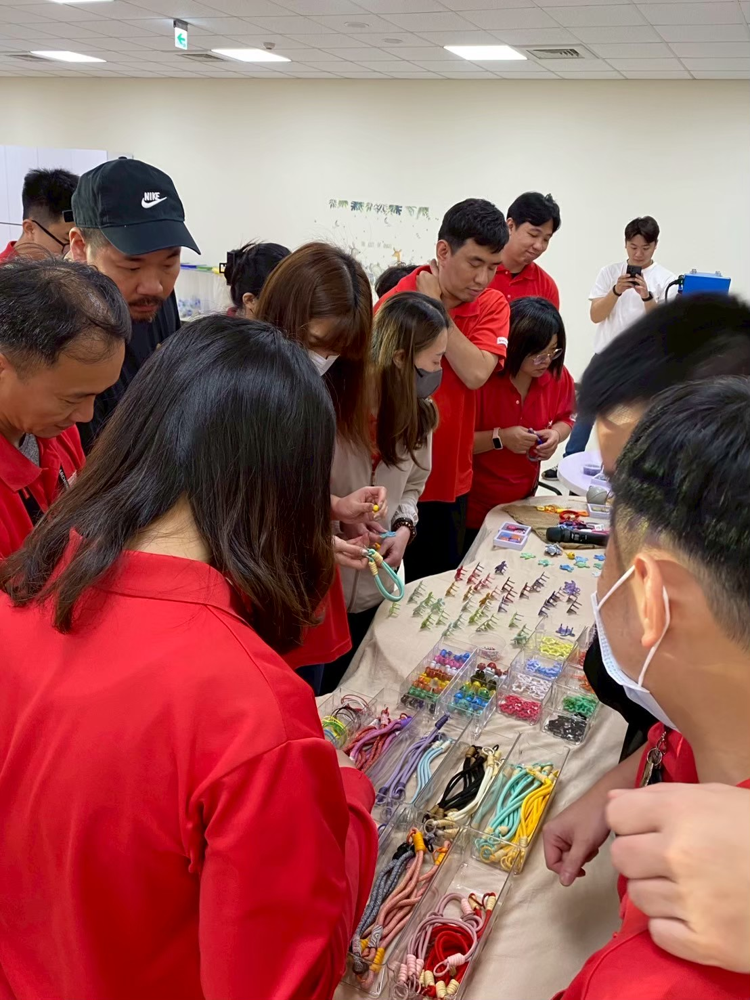
企業活動
帶領團隊認識材料、共同創作。
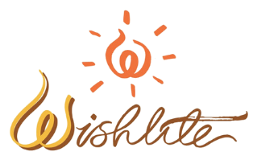
WISHLITE SUSTAINABLE ACADEMY
永續行動學院
從材料實作到活動設計，
讓你的經驗有新的應用。
加入 LINE，接收下一場直播通知。
從認識材料、設計體驗，到方案落地。

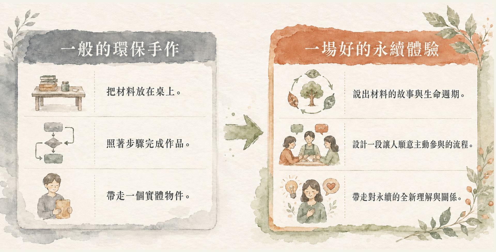
把材料應用、活動設計與帶領經驗，整理成循序漸進的課程與練習。
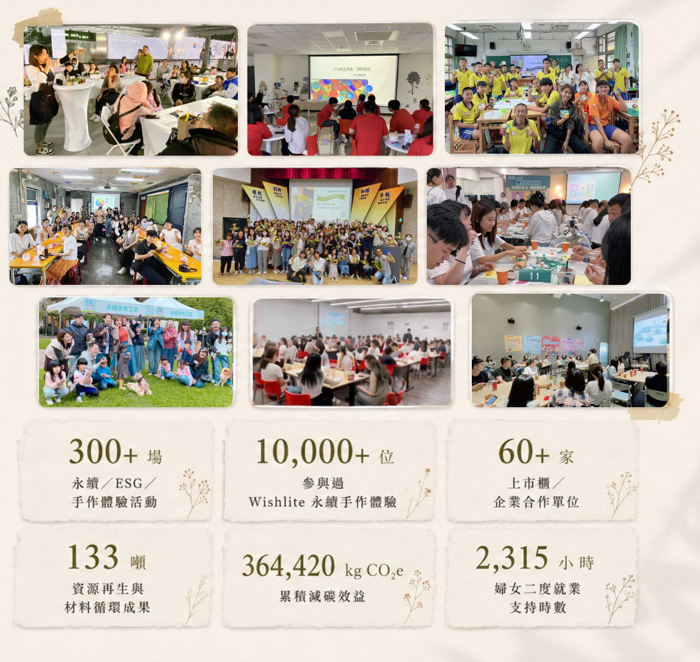
Wishlite 品牌累積實績
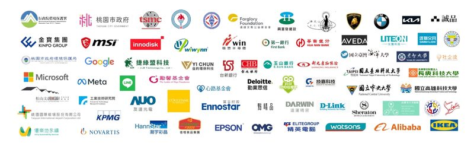

4 小時線上課程，搭配寄到家的材料體驗包。
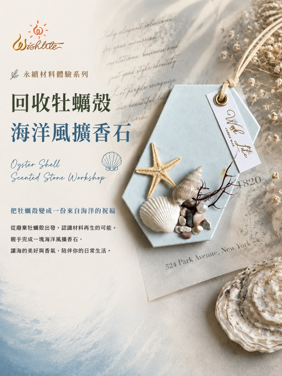
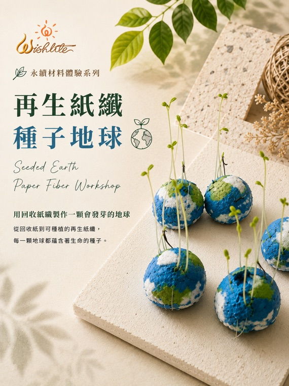
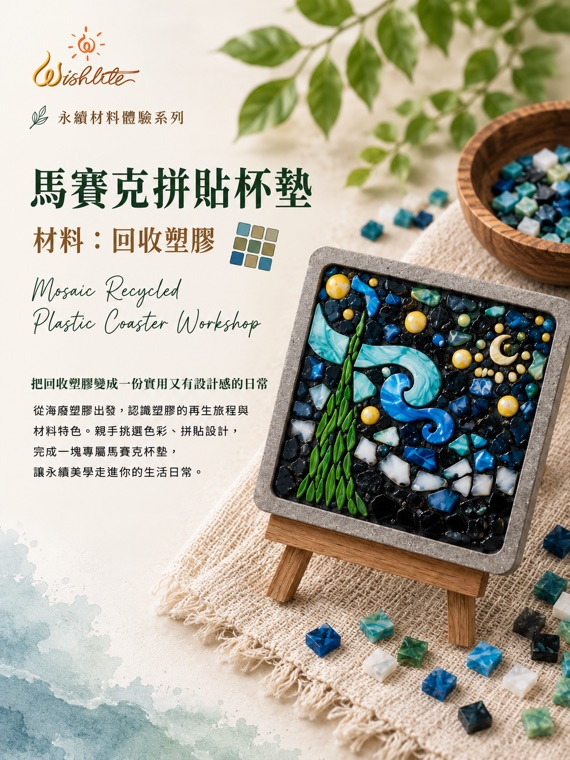
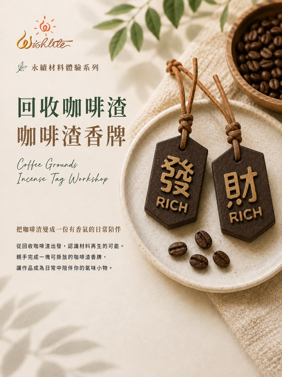
從課堂到活動現場，想像你可以如何運用所學。

帶領團隊認識材料、共同創作。
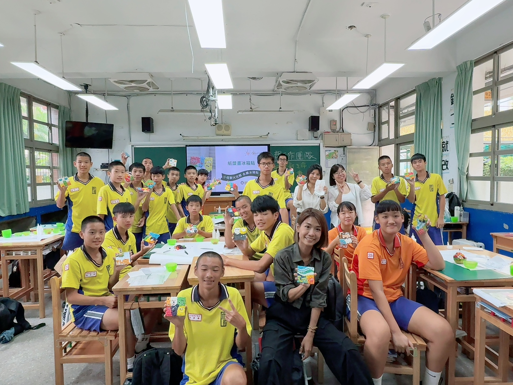
把循環材料變成容易參與的學習活動。
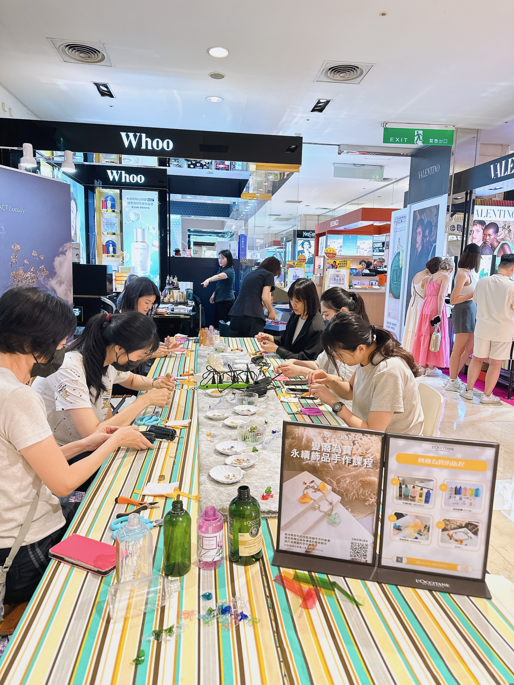
結合品牌故事，設計互動與作品。
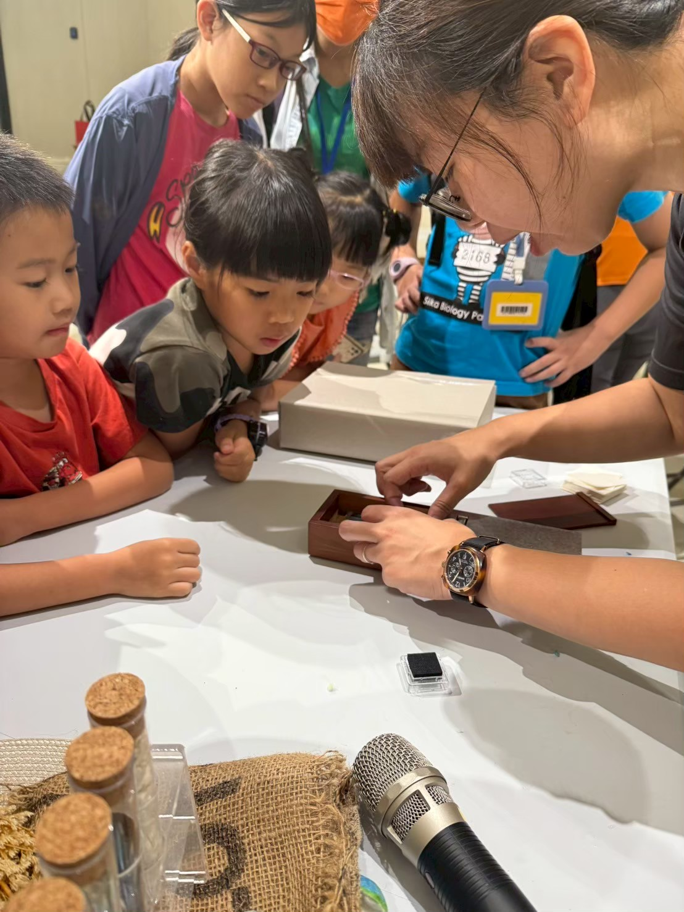
讓家長與孩子一起觀察、動手與分享。
Wishlite 既有活動紀錄・體驗設計的應用情境
適合教育、社區與活動工作者，以及想延伸專長的手作老師。
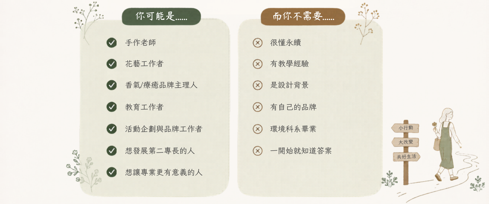
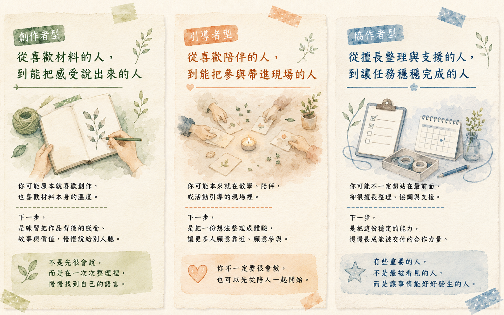
不必先選定角色，可以在學習與實作中探索適合自己的方向。
看看 Wishlite 夥伴如何從自己的經驗出發，
走進創作、教學與活動現場。

還不確定適合哪一條路？
加入 LINE，告訴我們你的背景與期待。
可以。課程會從材料理解與體驗設計的基礎開始，不需要先具備永續、設計或授課背景。
課程由線上學習、實體實作、真實場域與檢核組成，會提供清楚的學習節奏與任務安排。仍建議報名前確認自己能保留足夠時間完成學習。
可以。你不需要在開始前就決定自己是創作者、引導者或協作者。課程會透過材料、案例與實作，幫助你逐步看見適合自己的位置。
L1 適合想先認識永續材料、材料故事與代表作品的人；L2 則進一步包含材料應用、體驗設計、方案整理、案例拆解、真實場域學習與成果檢核。
課程會協助你建立材料理解、體驗設計、方案整理與場域應用能力，但不保證接案或合作機會。後續若有適合的專案，仍會依學習成果、專案需求與實際評估安排。
每個人，都有自己靠近永續的方式。
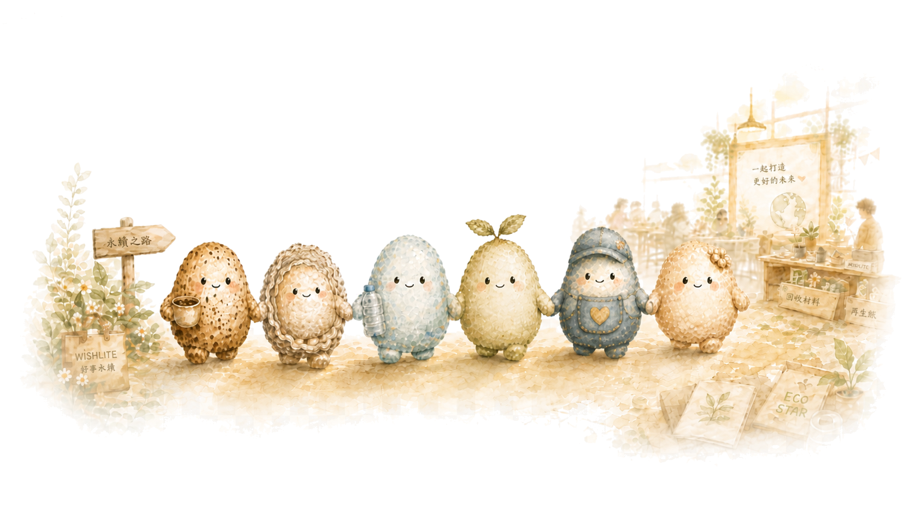